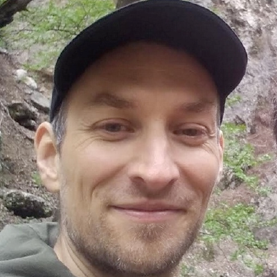

Quality Engineering · Test Automation
Stoyan Petrov
Lead QA Engineer
15+ years in software quality, 10+ in test automation. Most recently owned quality for a multi-instance crypto payments platform and led a 5-engineer QA team across four countries. I am as comfortable embedded in a scrum team as running a QA function.
Projects
source included
playwright-qa-portfolio
github ↗
Playwright test suite in TypeScript — 47 tests split across API and UI, with Zod contracts validating every response and the full run wired into CI.
- Every suite provisions its own state through the API and tears it down after, so no test depends on a record it didn't create — the suite runs from a cold environment and leaves nothing behind.
- Every asserted response is parsed through a strict Zod schema, so a field the API renames or drops fails the run it appears in, instead of passing quietly.
- One session shape covers every identity — the same fixture signs in a single admin or two concurrent users for an end-to-end approval flow, without a role × page fixture matrix.
nestjs-supertest-contract-suite
github ↗
In-process Supertest suite with a hand-written Zod contract layer, run against a public NestJS API. 39 tests, 17 endpoints, 34 strict schemas — and two real defects found in the app it tests.
- Response schemas are written from the published API spec rather than generated from the code under test, so a response that drifts from what was promised fails, instead of quietly becoming the new baseline.
- Endpoint contracts and multi-call behaviour are tested in separate layers — both real defects it found were flow-only, invisible to any single-endpoint test.
- Types are inferred straight from the same Zod schemas that validate each response, so a schema change breaks compilation at every call site still using the old shape, before the suite ever runs.